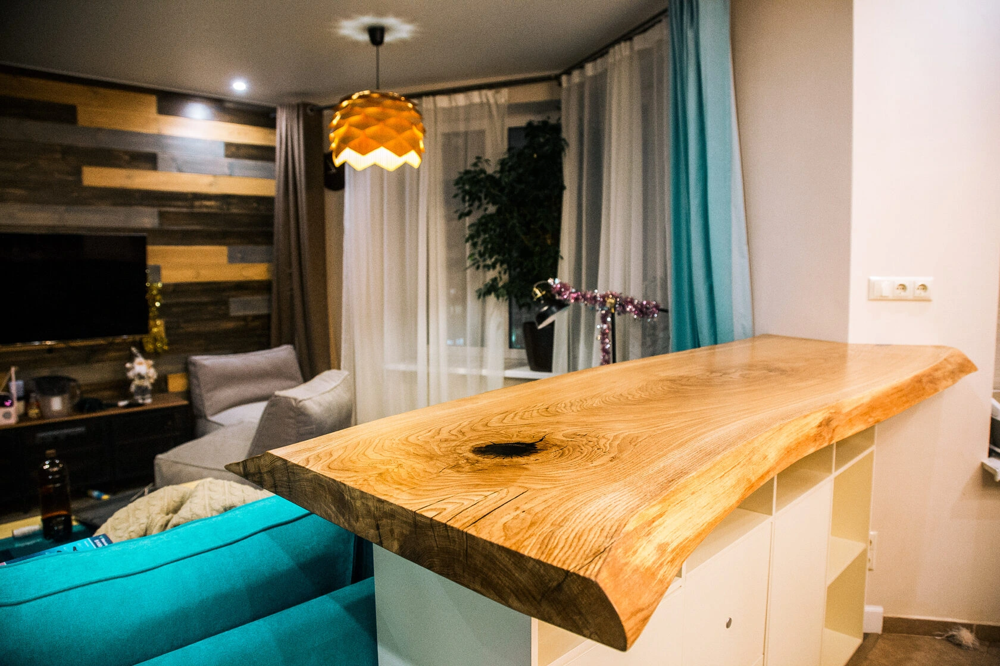

СТОЛЫ И МЕБЕЛЬ ИЗ МАССИВАДерево.
Дерево.
Со своим рисунком.
Столы и авторская мебель из массива под заказ. Подберём слэб, форму и основание для вашего пространства.
Обсудить мой стол
СЛЭБЫ И ДЕТАЛИНе повторить.
Не повторить.
Можно выбрать.
Рисунок, кромка и оттенок древесины у каждого слэба свои. Обсудим размеры и назначение будущего стола, подберём материал и исполнение.
Подобрать исполнение